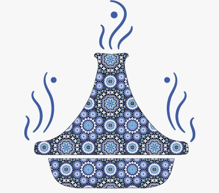

moroccan flavors
couscous & tajin
Toggle navigation
Couscous
Tajine
Pastilla
Our Menu
Couscous
Couscous, Morocco's beloved dish, is a culinary delight steeped in tradition. It begins with semolina grains meticulously rolled and steamed to create light, fluffy pearls. This grain forms the bedrock of a vibrant and hearty meal, often accompanied by a delightful assortment of vegetables like carrots, zucchini, and chickpeas. The dish's versatilit y shines through as it can be served with succulent meat, typically lamb or chicken, perfectly cooked to tender, flavorful perfection. The aromatic essence of spices such as cumin, turmeric, and cinnamon infuses each grain, elevating the dish's taste profile.The art of eating couscous is a communal experience, a symbol of unity and togetherness, as families gather around a communal platter, sharing stories and relishing the harmonious blend of textures and flavors.
Tajine
Tagine, both a cooking vessel and a revered Moroccan dish, embodies the essence of slow-cooking and intricate flavors. The cone-shaped earthenware pot, also known as a tagine, perfectly encapsulates the culinary artistry of Morocco. This dish is a symphony of tender meat, be it succulent lamb, chicken, or sometimes beef, harmonizing with an array of vibrant vegetables such as potatoes, tomatoes, and onionsThe magic of tagine lies in its simmering process, allowing the ingredients to meld together, creating a succulent and aromatic stew. A fusion of spices like cumin, paprika, saffron, and cinnamon imparts a tantalizing aroma and depth of flavor, making each bite a delightful journey through Moroccan cuisine. The tender, slow-cooked meat melts in your mouth.
Pastilla
Pastilla, an epitome of Moroccan culinary finesse, is a unique and indulgent delicacy that marries sweet and savory flavors in a symphony of taste. Encased in delicate, flaky layers of pastry, lies a sumptuous filling of shredded poultry, often chicken or pigeon, cooked to perfection with a medley of aromatic spices like cinnamon, ginger, and saffron. This savory concoction is then combined with a harmonious blend of almonds, eggs, and parsley, resulting in a tantalizing filling that awakens the taste buds.What sets pastilla apart is its exquisite blend of ingredients and textures. The thin, crisp layers of pastry encase a savory filling, which is balanced by a dusting of powdered sugar and cinnamon, offering a unique juxtaposition of flavors.